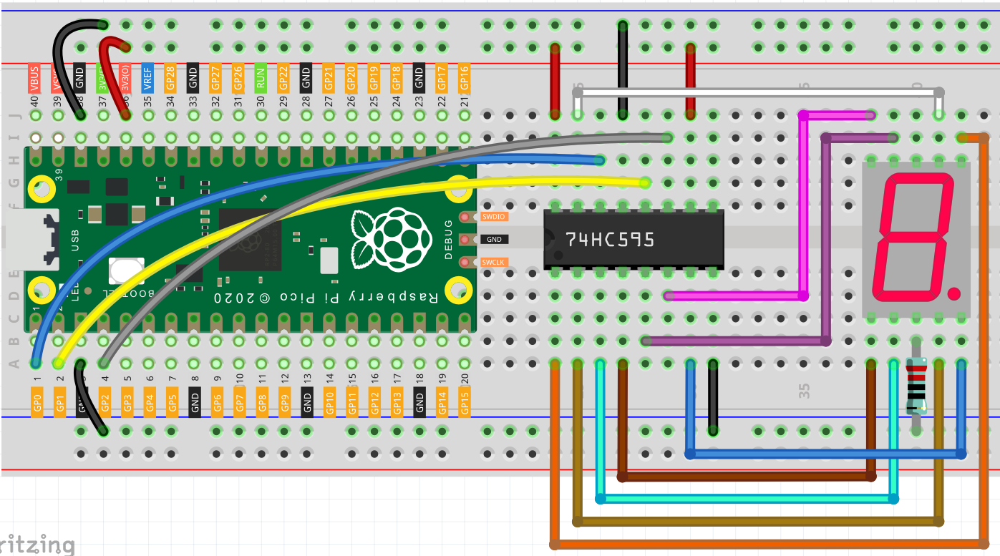

LED Segment Display¶
LED Segment Display在生活中随处可见。 如在空调上，它可用来显示温度；在交通指示灯上，它可用来显示计时器。
LED Segment Display本质上是由8个LED封装起来的器件，其中7个条状的LED构成了”8”字形，还有一个略小的点状LED作为小数点。这些LED被标记为a,b,c,d,e,f,g和dp，它们拥有各自的阳极pin，并且共享阴极，它们的引脚位置如下图所示。

这意味着它需要由8个数字信号同时控制才能完全工作起来。
LED Segment Display与我们上个章节中使用的74HC595是很好的搭配。 它们中的一个需要接收8个数字信号才能妥善工作；另一个则可以将一个8位二进制数转化为8个数字输出。 换而言之，74HC595可以让我们写入8位二进制数来控制LED Segment Display的glyph。
Wiring¶
将 Pico 的3V3和 GND 连接至面包板的电源总线。
将74HC595跨过中间间隙的插入面包板中。
用跳线连接Pico的GP0引脚与74HC595的DS引脚（14引脚）。
连接Pico的GP1引脚与74HC595的STcp引脚（12引脚）。
连接Pico的GP2引脚与74HC595的SHcp引脚（11引脚）。
将74HC595上的VCC引脚（16引脚）和MR引脚（10引脚）连接至正极电源总线。
将74HC595上的GND引脚（8引脚）和CE引脚（13引脚）连接至负极电源总线。
将LED Segment Display插入面包板，将GND引脚串联一个220Ω电阻接入负极电源总线。
Note
220欧姆的电阻器色环颜色为红红黑黑棕。
按照下表在74hc595与LED Segment Display之间连线。
Wiring¶ 74HC595
LED Segment Display
Q0
a
Q1
b
Q2
c
Q3
d
Q4
e
Q5
f
Q6
g
Q7
dp
Code¶
import machine
import time
SEGCODE = [0x3f,0x06,0x5b,0x4f,0x66,0x6d,0x7d,0x07,0x7f,0x6f]
sdi = machine.Pin(0,machine.Pin.OUT)
rclk = machine.Pin(1,machine.Pin.OUT)
srclk = machine.Pin(2,machine.Pin.OUT)
def hc595_shift(dat):
rclk.low()
time.sleep_ms(5)
for bit in range(7, -1, -1):
srclk.low()
time.sleep_ms(5)
value = 1 & (dat >> bit)
sdi.value(value)
time.sleep_ms(5)
srclk.high()
time.sleep_ms(5)
time.sleep_ms(5)
rclk.high()
time.sleep_ms(5)
while True:
for num in range(10):
hc595_shift(SEGCODE[num])
time.sleep_ms(500)
当程序运行时，你将能看到LED Segment Display 依次显示0~9。
How it works?¶
hc595_shift() 会让74HC595输出8个数字信号。
它会将二进制数的末尾数值输出到Q0。换而言之，写入二进制数”00000001”会使得Q0输出高电平，Q1~Q7输出低电平。
结合LED Segment Display来说，我们假设要亮起数字”1”，则需要为b,c写入高电平，为a,d,e,f,g,dg写入低电平。 也就是需要写入二进制数”00000110”。为了便于阅读，我们将其用十六进制表示为”0x06”
同样的，我们也能用相同的方式让LED Segment Display显示其他的数字，下表是这些数字对应的编码。
Numbers |
Binary Code |
Hex Code |
|---|---|---|
0 |
00111111 |
0x3f |
1 |
00000110 |
0x06 |
2 |
01011011 |
0x5b |
3 |
01001111 |
0x4f |
4 |
01100110 |
0x66 |
5 |
01101101 |
0x6d |
6 |
01111101 |
0x7d |
7 |
00000111 |
0x07 |
8 |
01111111 |
0x7f |
9 |
01101111 |
0x6f |
将这些code写入 hc595_shift() 即可让LED Segment Display显示对应的数字。